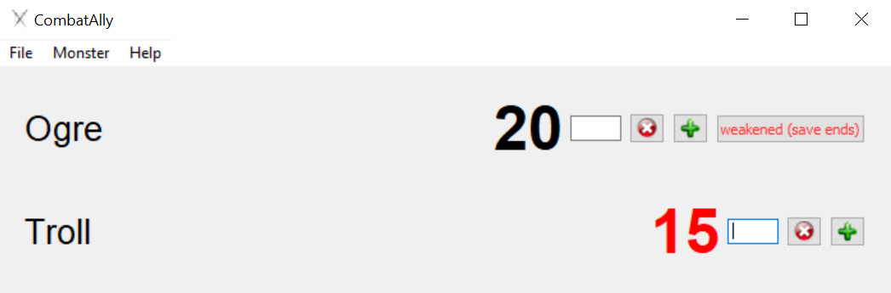
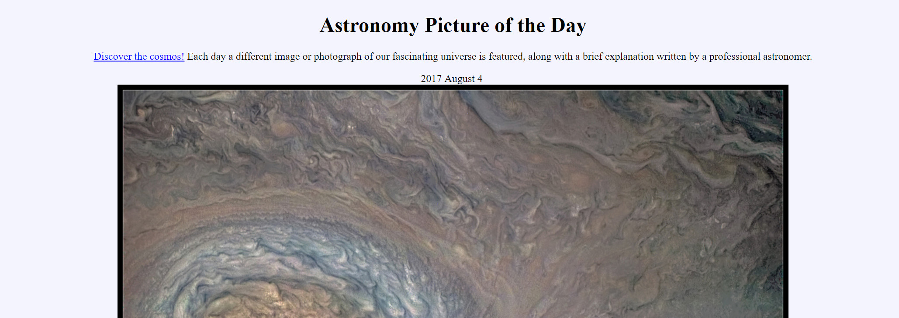

Walking Manhattan
This project is about walking as many of the streets of New York as possible and keeping track of my progress. I started this project after moving to New York in 2017 and wanted to experience as much of the city as possible. The data for this project is collected via a free GPS recorder (GPX Tracker) for my phone whenever I am taking a walk or walking back from the office. The GPX data is first cleaned using an editor (GPX Track Editor) to make the rendering less intensive and then converted into less verbose format that also strips out any timing information for privacy reasons using a Python script. The file is then parsed using JavaScript and rendered using the Google Maps API at the same time .Python, JavaScript
1 second everyday
This is a Python script that was inspired to create after watching a TED talk by Cesar Kuriyama (link). The idea is to be able to easily record one second of video footage every day and create one continuous video from it that captures the memories and thoughts of every day of one's life. An iPhone app existed at the time to do this editing on the phone, but I was not really happy with the design of the app and didn't want to be locked to the iPhone for such a long term project.The script I created crawls a Dropbox directory and interfaces with ffmpeg to extract one second for each of the videos in the directory. There is configuration file to determine which second of a longer video to use and whether to apply other transformations (mostly converting portrait into landscape, rotating an image by 180 degrees, and upscaling older videos). It then adds the date of that video (based off the file name) in either white or black text and reencodes all one second videos into one long video. All of the original videos are kept to prevent a quality degredation that would otherwise occur if new frames are added to an existing file. I have been doing this since December 2013 and unfortunately missed many days since, but it is an experience that I can recommend to everyone.
GitHub, Python
AAA Combat Simulator
This project is a combat simulator for the popular strategy board game Axis & Allies. Upon entering the number of units that participate in a battle for each side, the simulator will perform a large number of simulated battles and return the percentage of winning, as well as the amount of IPC damage inflicted on either party. It uses online resources to populate various scenarios that can be played in the free online version of the boardgame, TripleA. This application was the primary reason behind the development, but a decent simulator has since been included in TripleA itself.GitHub, C++ with Qt
Combat Ally
This application was designed to support a dungeon master when heading a Dungeons & Dragons 4th Edition session. In the application it is possible to add an arbitrary number of enemies and keep track of their original hitpoints, current hitpoints and afflictions. Based off the total and current hitpoints the bloodied stat is signaled, as well.GitHub, C++ with Qt
APOD Wallpaper
This Python script is meant to automatically execute every day and will download the current Astronomy Picture of the Day (APOD) and set it as the desktop background. It currently only supports setting the background picture on Windows using the WIN32 API.GitHub, Python
Stammbaum
This application is a simple graphing tool for a family tree. It was meant as a way to easily collect information about distant family members an keep all information organized in a custom database format.GitHub, C++ with Qt
Character Status
This application was an iOS application on the AppStore used to replace a physical character sheet in Dungeons & Dragons 4th Edition. It kept track of stats, skills, afflictions, hitpoints, armor class, powers, and all other important aspects of a character. It has since fallen into disrepair and has been removed from sale in the App Store.C#